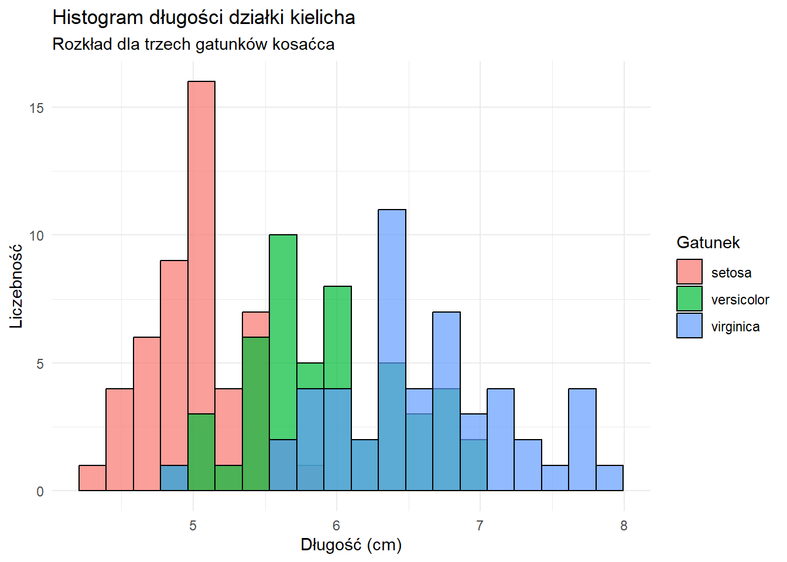
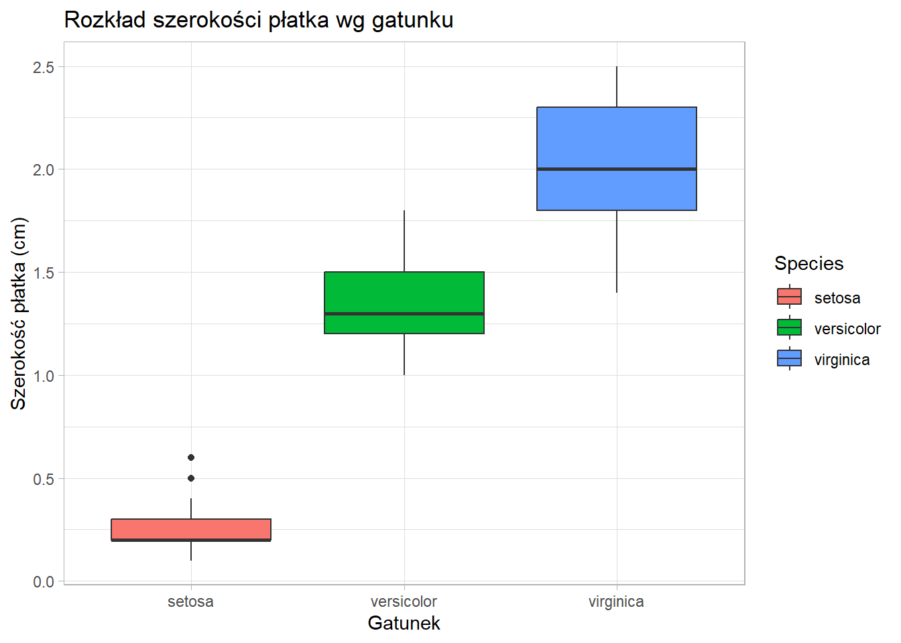
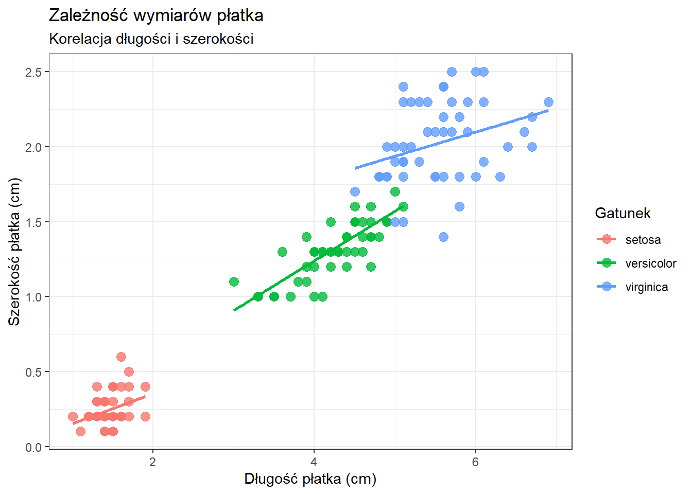

Last updated: 2026-01-18
Checks: 7 0
Knit directory: projekt/
This reproducible R Markdown analysis was created with workflowr (version 1.7.2). The Checks tab describes the reproducibility checks that were applied when the results were created. The Past versions tab lists the development history.
Great! Since the R Markdown file has been committed to the Git repository, you know the exact version of the code that produced these results.
Great job! The global environment was empty. Objects defined in the global environment can affect the analysis in your R Markdown file in unknown ways. For reproduciblity it’s best to always run the code in an empty environment.
The command set.seed(20260109) was run prior to running
the code in the R Markdown file. Setting a seed ensures that any results
that rely on randomness, e.g. subsampling or permutations, are
reproducible.
Great job! Recording the operating system, R version, and package versions is critical for reproducibility.
Nice! There were no cached chunks for this analysis, so you can be confident that you successfully produced the results during this run.
Great job! Using relative paths to the files within your workflowr project makes it easier to run your code on other machines.
Great! You are using Git for version control. Tracking code development and connecting the code version to the results is critical for reproducibility.
The results in this page were generated with repository version e4f2fc4. See the Past versions tab to see a history of the changes made to the R Markdown and HTML files.
Note that you need to be careful to ensure that all relevant files for
the analysis have been committed to Git prior to generating the results
(you can use wflow_publish or
wflow_git_commit). workflowr only checks the R Markdown
file, but you know if there are other scripts or data files that it
depends on. Below is the status of the Git repository when the results
were generated:
Ignored files:
Ignored: .Rhistory
Ignored: .Rproj.user/
Ignored: analysis/prezentacja.html
Note that any generated files, e.g. HTML, png, CSS, etc., are not included in this status report because it is ok for generated content to have uncommitted changes.
These are the previous versions of the repository in which changes were
made to the R Markdown (analysis/analiza.Rmd) and HTML
(docs/analiza.html) files. If you’ve configured a remote
Git repository (see ?wflow_git_remote), click on the
hyperlinks in the table below to view the files as they were in that
past version.
| File | Version | Author | Date | Message |
|---|---|---|---|---|
| html | 664dc3f | MateuszDrag | 2026-01-18 | Build site. |
| html | 545ad49 | MateuszDrag | 2026-01-10 | Build site. |
| html | d1e2b6c | MateuszDrag | 2026-01-10 | Build site. |
| Rmd | ee9eb29 | MateuszDrag | 2026-01-10 | Publikacja strony |
| html | 13bf982 | MateuszDrag | 2026-01-09 | Build site. |
| Rmd | d4528be | MateuszDrag | 2026-01-09 | Moja pierwsza strona |
W niniejszej analizie wykorzystano zbiór danych iris (Kosaćce). Jest to jeden z najsłynniejszych zbiorów w statystyce, wprowadzony przez Ronalda Fishera w 1936 roku.
Zbiór zawiera 150 obserwacji dotyczących kwiatów z trzech gatunków: setosa, versicolor i virginica. Dla każdego kwiatu zmierzono 4 cechy (w centymetrach):
Długość działki kielicha (Sepal.Length)
Szerokość działki kielicha (Sepal.Width)
Długość płatka (Petal.Length)
Szerokość płatka (Petal.Width)
#Wczytanie wymaganych pakietów
library(dplyr)
library(ggplot2)
#Ustawienie ziarna dla powtarzalności (na wypadek funkcji losowych)
set.seed(123) W tej sekcji wykonuję operacje na danych, aby przygotować je do wizualizacji i wyciągnąć podstawowe statystyki.
Użyte funkcje:
filter - wybieramy tylko dwa gatunki do porównania.
mutate - tworzymy nową zmienną (proporcja wymiarów).
group_by i summarise - liczymy średnie dla grup.
#Filtrowanie i Mutacja
#Wybieramy gatunki inne niż 'setosa' i tworzymy wskaźnik smukłości płatka
iris_processing <- iris %>% filter(Species != "setosa") %>% mutate(Petal_Ratio = Petal.Length / Petal.Width)
#Wyświetlenie pierwszych wierszy przetworzonych danych
head(iris_processing) Sepal.Length Sepal.Width Petal.Length Petal.Width Species Petal_Ratio
1 7.0 3.2 4.7 1.4 versicolor 3.357143
2 6.4 3.2 4.5 1.5 versicolor 3.000000
3 6.9 3.1 4.9 1.5 versicolor 3.266667
4 5.5 2.3 4.0 1.3 versicolor 3.076923
5 6.5 2.8 4.6 1.5 versicolor 3.066667
6 5.7 2.8 4.5 1.3 versicolor 3.461538#Grupowanie i Podsumowanie
#Liczymy średnią długość płatka dla każdego gatunku
statystyki_gatunkow <- iris %>% group_by(Species) %>% summarise( Srednia_Dlugosc_Platka = mean(Petal.Length), Srednia_Szerokosc_Platka = mean(Petal.Width), Liczba_Obserwacji = n() )
#Wyświetlenie tabeli wyników
knitr::kable(statystyki_gatunkow, caption = "Średnie wymiary płatków wg gatunku") | Species | Srednia_Dlugosc_Platka | Srednia_Szerokosc_Platka | Liczba_Obserwacji |
|---|---|---|---|
| setosa | 1.462 | 0.246 | 50 |
| versicolor | 4.260 | 1.326 | 50 |
| virginica | 5.552 | 2.026 | 50 |
Poniżej przedstawiono graficzną analizę zależności między cechami kwiatów.
Wykres 1: Histogram długości kielicha Analiza rozkładu długości działki kielicha (Sepal.Length) dla wszystkich gatunków.
ggplot(iris, aes(x = Sepal.Length, fill = Species)) + geom_histogram(bins = 20, color = "black", alpha = 0.7, position = "identity") + labs( title = "Histogram długości działki kielicha", subtitle = "Rozkład dla trzech gatunków kosaćca", x = "Długość (cm)", y = "Liczebność", fill = "Gatunek" ) + theme_minimal()
| Version | Author | Date |
|---|---|---|
| d1e2b6c | MateuszDrag | 2026-01-10 |
Gatunek setosa (czerwony) ma wyraźnie krótsze kielichy i tworzy oddzielną grupę. Pozostałe dwa gatunki (versicolor i virginica) mają zbliżone rozkłady, które na siebie zachodzą.
Wykres 2: Boxplot szerokości płatka Porównanie szerokości płatka (Petal.Width) między gatunkami za pomocą wykresu pudełkowego.
ggplot(iris, aes(x = Species, y = Petal.Width, fill = Species)) + geom_boxplot() + labs( title = "Rozkład szerokości płatka wg gatunku", x = "Gatunek", y = "Szerokość płatka (cm)" ) + theme_light()
| Version | Author | Date |
|---|---|---|
| d1e2b6c | MateuszDrag | 2026-01-10 |
Wykres pudełkowy idealnie pokazuje różnice między gatunkami. Setosa ma bardzo wąskie płatki (mała wariancja), Versicolor średnie, a Virginica najszersze. Nie ma części wspólnych między pudełkami, co oznacza, że ta cecha świetnie rozróżnia gatunki.
Wykres 3: Scatter plot (Długość vs Szerokość płatka) Zbadanie korelacji między długością a szerokością płatka.
ggplot(iris, aes(x = Petal.Length, y = Petal.Width, color = Species)) + geom_point(size = 3, alpha = 0.8) + geom_smooth(method = "lm", se = FALSE) + labs( title = "Zależność wymiarów płatka", subtitle = "Korelacja długości i szerokości", x = "Długość płatka (cm)", y = "Szerokość płatka (cm)", color = "Gatunek" ) + theme_bw()`geom_smooth()` using formula = 'y ~ x'
| Version | Author | Date |
|---|---|---|
| d1e2b6c | MateuszDrag | 2026-01-10 |
Widoczna jest bardzo silna korelacja dodatnia – im dłuższy płatek, tym szerszy. Gatunki tworzą trzy wyraźne, odseparowane od siebie klastry. Liniowy charakter zależności utrzymuje się wewnątrz każdego gatunku. ``
sessionInfo()R version 4.5.2 (2025-10-31 ucrt)
Platform: x86_64-w64-mingw32/x64
Running under: Windows 11 x64 (build 26100)
Matrix products: default
LAPACK version 3.12.1
locale:
[1] LC_COLLATE=Polish_Poland.utf8 LC_CTYPE=Polish_Poland.utf8
[3] LC_MONETARY=Polish_Poland.utf8 LC_NUMERIC=C
[5] LC_TIME=Polish_Poland.utf8
time zone: Europe/Warsaw
tzcode source: internal
attached base packages:
[1] stats graphics grDevices utils datasets methods base
other attached packages:
[1] ggplot2_4.0.1 dplyr_1.1.4 workflowr_1.7.2
loaded via a namespace (and not attached):
[1] sass_0.4.10 generics_0.1.4 lattice_0.22-7 stringi_1.8.7
[5] digest_0.6.39 magrittr_2.0.4 evaluate_1.0.5 grid_4.5.2
[9] RColorBrewer_1.1-3 fastmap_1.2.0 Matrix_1.7-4 rprojroot_2.1.1
[13] jsonlite_2.0.0 processx_3.8.6 whisker_0.4.1 ps_1.9.1
[17] promises_1.5.0 httr_1.4.7 mgcv_1.9-3 scales_1.4.0
[21] jquerylib_0.1.4 cli_3.6.5 rlang_1.1.6 splines_4.5.2
[25] withr_3.0.2 cachem_1.1.0 yaml_2.3.12 otel_0.2.0
[29] tools_4.5.2 httpuv_1.6.16 vctrs_0.6.5 R6_2.6.1
[33] lifecycle_1.0.5 git2r_0.36.2 stringr_1.6.0 fs_1.6.6
[37] pkgconfig_2.0.3 callr_3.7.6 pillar_1.11.1 bslib_0.9.0
[41] later_1.4.4 gtable_0.3.6 glue_1.8.0 Rcpp_1.1.0
[45] xfun_0.55 tibble_3.3.0 tidyselect_1.2.1 rstudioapi_0.17.1
[49] knitr_1.51 farver_2.1.2 htmltools_0.5.9 nlme_3.1-168
[53] rmarkdown_2.30 labeling_0.4.3 compiler_4.5.2 getPass_0.2-4
[57] S7_0.2.1